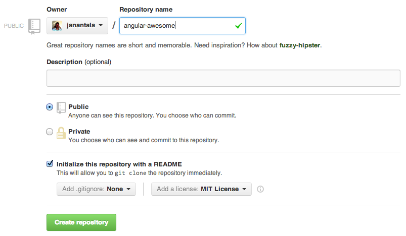

How to build an open source AnglurJS module?
By Jan Antala / @janantala
WebElement #25
'Allo, 'Allo!

http://angular-adaptive.github.io


...Okay, lets get it started!

Lets create a new repo
Naming Conventions
angular-[optional-namespace]-[thing-name]-[optional-thing-type]
Example:
angular-qr
angular-adaptive-speech
Specification for reusable AngularJS components: angular-component-spec
Which license?
Choosing an OSS license doesn’t need to be scary
Continuous Integration

Travis CI
.travis.yml
language: node_js
node_js:
- "0.8"
before_install:
- export DISPLAY=:99.0
- sh -e /etc/init.d/xvfb start
- npm install -g bower grunt-cli
- npm install
- bower install
script: "grunt"


Pro tip:
To prevent your push from being built
add [ci skip] to the commit message.
Promotion

mention @AngularJS
hashtag #AngularJS

Google+

ngModules

Finito!